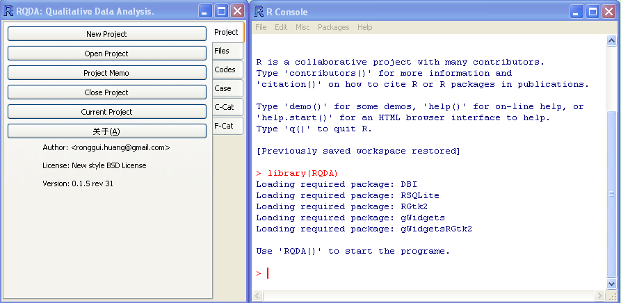

Welcome to the RQDA Project!
Whatis RQDA and its features?
RDQA is a package for Qualitative Data Analysis built upon R, a free qualitative analysis software application. It works both on the Windows and Linux/FreeBSD platforms. RQDA is an easy-to-use tool to assist in the analysis of textual data. At the present, it supports only plain text format data. All the information is stored in SQLite database via the R package of RSQLite. The GUI is based on RGtk2, via the aid of gWidgetsRGtk2. It includes a number of standard Computer-Aided Qualitative Data Analysis features. Besides, it seamlessly integrated with R, which means that a) statistical analysis on the coding is possible, and b) functions about data manipulation and analysis can be easily extended by writing R functions. To some extent, RQDA and R makes an integrated platform for both quantitative and qualitative data analysis.
By
the GUI, it can:
By R functions, it can:
Other functions may be added with the development of the software in the future.
INSTALLATION
RQDA is based on R, so you have to install R and relevant packages in
order to use RQDA.
install.packages("RQDA",repos="http://R-Forge.R-project.org")
.
For Windows, manually download the package of RQDA(0.1.3),
then install it by clicking the menu: “Packages”
– “Install
package(s) from local zip files...”.

More information?